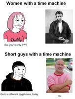

Some Japanese bullet trains will soon support premium private suites this October, featuring windows with embedded 5G antennas for steadier onboard Wi-Fi and NTT noise-cancelling cabin tech to reduce train noise. The 5G window antennas are designed to maintain line-of-sight connections as trains race past base stations at up to 285 km/h. The Register reports: Rail operator JR Central announced the new tech late last month and will initially deploy a couple of the suites on six trains. The carrier explained that the antennas come from a Japanese company called AGC that weaves microscopic wires through glass to form an antenna. JR Central will connect the windows to an on-train Wi-Fi router.
AGC says rival tech relies on 5G signals reaching a train and then bouncing around inside before reaching the Wi-Fi unit. The company says antennas woven into train windows maintain line of sight to nearby 5G base stations. That matters because JR Central's Shinkansen can achieve speeds of up to 285 km/h, which means they speed past cellular network base stations so quickly that it's frequently necessary to reconnect to another radio. AGC says keeping a line of sight connection means its antennas allow increased 5G signal strength, so Wi-Fi service on board trains should be more stable and speedy.
The sound-deadening kit JR Central will deploy is called Personalized Sound Zone (PSZ) and comes from Japan's tech giant NTT. The tech uses the same principles applied to noise-cancelling headphones -- determine the waveform of sound and project an inversion of that waveform that cancels out ambient noise.
Read more of this story at Slashdot.
Boston Dynamics has integrated Google DeepMind into its robotic dog Spot, giving it more autonomous reasoning for industrial inspections like spotting spills and reading gauges. Spot can also now recognize when to call on other AI tools. IEEE Spectrum reports: Boston Dynamics is one of the few companies to commercially deploy legged robots at any appreciable scale; there are now several thousand hard at work. Today the company is announcing that its quadruped robot Spot is now equipped with Google DeepMind's Gemini Robotics-ER 1.6, a high-level embodied reasoning model that brings usability and intelligence to complex tasks.
[T]he focus of this partnership is on one of the very few applications where legged robots have proven themselves to be commercially viable: inspection. That is, wandering around industrial facilities, checking to make sure that nothing is imminently exploding. With the new AI onboard, Spot is now able to autonomously look for dangerous debris or spills, read complex gauges and sight glasses, and call on tools like vision-language-action models when it needs help understanding what's going on in the environment around it. "Advances like Gemini Robotics-ER 1.6 mark an important step toward robots that can better understand and operate in the physical world," Marco da Silva, vice president and general manager of Spot at Boston Dynamics, says in a press release. "Capabilities like instrument reading and more reliable task reasoning will enable Spot to see, understand, and react to real-world challenges completely autonomously."
You can watch a demo of Spot's new capabilities on YouTube.
Read more of this story at Slashdot.
Cal is moving its flagship scheduling software from open source to a proprietary license, arguing that AI coding tools now make it much easier for attackers to scan public codebases for vulnerabilities. "Open source security always relied on people to find and fix any problems," said Peer Richelsen, co-founder of Cal. "Now AI attackers are flaunting that transparency." CEO Bailey Pumfleet added: "Open-source code is basically like handing out the blueprint to a bank vault. And now there are 100x more hackers studying the blueprint." The company says it still supports open source and is releasing a separate Cal.diy version for hobbyists, but doesn't want to risk customer booking data in its commercial product. ZDNet reports: When Cal was founded in 2022, Bailey Pumfleet, the CEO and co-founder, wrote, "Cal.com would be an open-source project [because] limitations of existing scheduling products could only be solved by open source." Since Cal was successful and now claims to be the largest Next.js project, he was on to something. Today, however, Pumfleet tells me that AI programs such as "Claude Opus can scour the code to find vulnerabilities," so the company is moving the project from the GNU Affero General Public License (AGPL) to a proprietary license to defend the program's security.
[...] Cal also quoted Huzaifa Ahmad, CEO of Hex Security, "Open-source applications are 5-10x easier to exploit than closed-source ones. The result, where Cal sits, is a fundamental shift in the software economy. Companies with open code will be forced to risk customer data or close public access to their code." "We are committed to protecting sensitive data," Pumfleet said. "We want to be a scheduling company, not a cybersecurity company." He added, "Cal.com handles sensitive booking data for our users. We won't risk that for our love of open source."
While its commercial program is no longer open source, Cal has released Cal.diy. This is a fully open-source version of its platform for hobbyists. The open project will enable experimentation outside the closed application that handles high-stakes data. Pumfleet concluded, "This decision is entirely around the vulnerability that open source introduces. We still firmly love open source, and if the situation were to change, we'd open source again. It's just that right now, we can't risk the customer data."
Read more of this story at Slashdot.
A Manhattan federal jury found that Live Nation and Ticketmaster illegally maintained monopoly power in the ticketing market. The findings follow an antitrust case brought by states after a separate DOJ settlement. CNN reports: The verdict was reached following a lengthy trial in New York federal court that included testimony from top executives in the music and entertainment industries. Jurors began deliberating on Friday. The Justice Department and 39 state attorneys general, including California and New York, and Washington, DC, sued Live Nation in 2024 alleging its combination with Ticketmaster and control of "virtually every aspect of the live music ecosystem" have harmed fans, artists, and venues.
During the second week of trial, in a move that surprised even the judge, the Justice Department reached a secret settlement with Live Nation. A handful of states signed onto the deal, but more than two dozen proceeded to trial. Under the DOJ deal, Live Nation agreed to allow competitors, like SeatGeek or StubHub, to offer tickets to its events, cap ticketing service fees at 15%, and divest exclusive booking agreements with 13 amphitheaters. The deal includes a $280 million settlement fund for state damages claims for the handful of states that signed onto the deal. The DOJ settlement requires the judge's approval.
Read more of this story at Slashdot.
An anonymous reader quotes a report from TorrentFreak: Spotify and several major record labels, including UMG, Sony, and Warner, secured a $322 million default judgment against the unknown operators of Anna's Archive. The shadow library failed to appear in court and briefly released millions of tracks that were scraped from Spotify via BitTorrent. In addition to the monetary penalty, a permanent injunction required domain registrars and other parties to suspend the site's domain names. [...]
The music labels get the statutory maximum of $150,000 in damages for around 50 works. Spotify adds a DMCA circumvention claim of $2,500 for 120,000 music files, bringing the total to more than $322 million. The plaintiff previously described their damages request as "extremely conservative." The DMCA claim is based only on the 120,000 files, not the full 2.8 million that were released. Had they applied the $2,500 rate to all released files, the damages figure would exceed $7 billion. Anna's Archive did not show up in court, and the operators of the site remain unidentified. The judgment attempts to address this directly, by ordering Anna's Archive to file a compliance report within ten business days, under penalty of perjury, that includes valid contact information for the site and its managing agents.
Whether the site will comply with this order is highly uncertain. For now, the monetary judgment is mostly a victory on paper, as recouping money from an unknown entity is impossible. For this reason, the music companies also requested a permanent injunction. In addition to the damages award, [Judge Jed Rakoff] entered a permanent worldwide injunction covering ten Anna's Archive domains: annas-archive.org, .li, .se, .in, .pm, .gl, .ch, .pk, .gd, and .vg. Domain registries and registrars of record, along with hosting and internet service providers, are ordered to permanently disable access to those domains, disable authoritative nameservers, cease hosting services, and preserve evidence that could identify the site's operators.
The judgment names specific third parties bound by those obligations, including Public Interest Registry, Cloudflare, Switch Foundation, The Swedish Internet Foundation, Njalla SRL, IQWeb FZ-LLC, Immaterialism Ltd., Hosting Concepts B.V., Tucows Domains Inc., and OwnRegistrar, Inc. Anna's Archive is also ordered to destroy all copies of works scraped from Spotify and to file a compliance report within ten business days, under penalty of perjury, including valid contact information for the site and its managing agents. That last requirement could prove significant, given that the identity of the site's operators remains unknown.
Read more of this story at Slashdot.
A 63-year-old man in Norway appears to be cured of HIV after receiving a stem cell transplant from his brother, who turned out to have a rare mutation that makes immune cells resistant to HIV. "Four years after the transplant, and two years after the man stopped antiretroviral therapy, he still appears to be free of the infection," reports Gizmodo. From the report: According to the report, the man was first diagnosed with myelodysplastic syndrome, a type of cancer that weakens blood cell production from bone marrow, in 2018. Though he seemed to initially respond to treatment, the cancer returned after two years, and doctors decided to perform a stem cell transplant. Because the man also had HIV (diagnosed in 2006), the doctors were hoping to treat both conditions at once, though they knew their chances were low. Most of these cases have involved the use of stem cells taken from people with two copies of a particular mutation in their CCR5 gene, which regulates the CC5R receptor on white blood cells. This mutation, named CCR5-delta 32, makes immune cells naturally resistant to infection from strains of HIV-1 (the most common type of the virus). However, only about 1% of the population carries two copies of the mutation.
After initial screening failed to find someone who both possessed the mutation and had compatible bone marrow, the doctors decided to move ahead with the man's brother, who was already known to have compatible bone marrow. But to everyone's surprise, testing on the day of the transplant showed that the brother also had the mutation. Though the man did experience some complications from the procedure, his body successfully started to produce new blood cells with the mutation. The doctors decided to take him off antiretroviral medication two years after the transplant. And in the two years since then, regular follow-up tests have failed to show any signs of the virus in his system. [...] According to AFP, there have only been roughly 10 cases worldwide involving an HIV cure through stem cell transplantation. This is the first to involve a family donor.
Read more of this story at Slashdot.
Sony Pictures chief Tom Rothman urged theater owners to cut down the roughly 30 minutes of trailers and ads before movies. "Get off the ad crack," Rothman told the audience at CinemaCon this week. "Get rid of the endless advertising and substantially shorten the long pre-shows." Variety reports: He noted that frequent moviegoers now show up a half hour late to avoid all the spots (something that reserved seating has made easier than ever before). Rothman said that means many people "don't even see the trailers," which results in "enticements gone to waste." Rothman predicted that the 2026 box office, which has already benefitted from hits like "Super Mario Galaxy Movie" and "Project Hail Mary," will rebound in a big way. But he acknowledged that attendance still trails pre-pandemic levels.
Rothman has been a vociferous defender of the big screen, pushing studios to embrace longer windows so that movies will stay in cinemas longer. That was a theme that Rothman returned to at CinemaCon, pressing exhibitors to hold strong and agree not to show movies that quickly appear on streaming services or on-demand platforms. "Enforce longer windows," Rothman said. "Yes, even if that means you cannot play every film."
In addition to stumping for exhibition, Rothman has practically begged Hollywood to invest in new stories along with all the franchise fare. In a recent New York Times op-ed, for instance, Rothman, the longest-serving studio chief, wrote, "For all the success of films driven by existing intellectual property, originality is essential to movies. Neither movie theaters nor the art form itself can survive without at least some originality. After all, you can't make a sequel to nothing."
Read more of this story at Slashdot.
Amazon is buying satellite communications company Globalstar for $10.8 billion to expand its Leo satellite-internet network and compete more directly with SpaceX's Starlink. The deal also includes a partnership with Apple to support satellite connectivity for iPhones and Apple Watches, with Amazon planning voice, data, and messaging services starting in 2028. The New York Times reports: Leo was Amazon's move to enter the market for beaming high-speed internet to the ground from orbit. That is an arena dominated by Elon Musk's SpaceX, which operates the Starlink satellite-internet service. Starlink, which has thousands of satellites in orbit, already serves several million customers around the world. This month, SpaceX filed to go public in what is shaping up to be one of the largest-ever initial public offerings. Mr. Musk has valued SpaceX -- which has landed contracts with federal agencies such as NASA and the Department of Defense -- at more than $1 trillion. Other companies are racing to catch up to what Mr. Musk has built for space.
Globalstar, founded in 1991, is a Louisiana-based global telecommunications company. It operates networks of low-Earth orbiting satellites to provide internet connectivity to customers. Paul Jacobs, Globalstar's chief executive, said in a statement that together, the two companies "will advance innovations in digital connectivity."
Read more of this story at Slashdot.
An anonymous reader quotes a report from UploadVR: A group of independent researchers built a device that can artificially induce smell using ultrasound, with no consumable cartridges required. [...] The team of four are Lev Chizhov, Albert Yan-Huang, Thomas Ribeiro, Aayush Gupta. Chizhov is a neurotech entrepreneur with a background in math and physics, Yan-Huang is a researcher at Caltech with a background in computation and neural systems, and Ribeiro and Gupta are co-researchers on the project with software engineering and AI expertise.
Instead of targeting your nose at all, the device directly targets the olfactory bulb in your brain with "focused ultrasound through the skull." The researchers say that as far as they're aware, no one has ever done this before, even in animals. A challenge in targeting the olfactory bulb is that it's buried behind the top of your nose, and your nose doesn't provide a flat surface for an emitter. Ultrasound also doesn't travel well through air. The solution the researchers came up with was to place the emitter on your forehead instead, with a "solid, jello-like pad for stability and general comfort," and the ultrasound directed downward towards the olfactory bulb.
To determine the best placement, they say they used an MRI of one of their skulls to "roughly determine where the transducer would point and how the focal region (where ultrasound waves actually concentrate) aligned with the olfactory bulb (the target for stimulation)". [...] According to the researchers, they were able to induce the sensation of fresh air "with a lot of oxygen", the smell of garbage "like few-day-old fruit peels," an ozone-like sensation "like you're next to an air ionizer," and a campfire smell of burning wood. While technically head-mounted, the current device does require being held up with two hands. But as with all such prototypes, it likely could be significantly miniaturized.
Read more of this story at Slashdot.
Longtime Slashdot reader AmiMoJo shares a report from the Guardian: Households will be called on to boost their consumption of Great Britain's record renewable energy this summer to help balance the power grid and lower energy bills. Under the new plans, people could be encouraged to run dishwashers and washing machines or charge up their electric vehicles when there is more wind and solar power than the electricity grid needs. The plan will be delivered with the help of energy suppliers, which may choose to offer heavily discounted or free electricity to their customers during specific periods when the energy system operator predicts there will be a surplus of electricity.
Many suppliers already offer more than 2 million households the opportunity to pay lower rates for electricity used during off-peak hours but this will be the first time that the system operator will use this tool to help balance the grid. The National Energy System Operator (Neso) hopes that by issuing a market notice to call on energy users to increase their consumption it can avoid making hefty payments to turn wind and solar farms off when demand for electricity is low, which are ultimately paid for through energy bills.
Read more of this story at Slashdot.
An anonymous reader quotes a report from the New York Times: Many scientists have contended that humans have evolved very little over the past 10,000 years. A few hundred generations was just a blink of the evolutionary eye, it seemed. Besides, our cultural evolution -- our technology, agriculture and the rest -- must have overwhelmed our biological evolution by now. A vast study, published on Wednesday in the journal Nature, suggests the opposite. Examining DNA from 15,836 ancient human remains, scientists found 479 genetic variants that appeared to have been favored by natural selection in just the past 10,000 years.
The researchers also concluded that thousands of additional genetic variants have probably experienced natural selection. Before the new study, scientists had identified only a few dozen variants. "There are so many of them that it's hard to wrap one's mind around them," said David Reich, a geneticist at Harvard Medical School and an author of the new study. He and his colleagues found that a mutation that is a major risk factor for celiac disease, for example, appeared just 4,000 years ago, meaning the condition may be younger than the Egyptian pyramids. The mutation became ever more common. Today, an estimated 80 million people worldwide have celiac disease, in which the immune system attacks gluten and damages the intestines.
The steady rise of the mutation came about through natural selection, the scientists argue. For some reason, people with the mutation had more descendants than people without it -- even though it put them at risk of an autoimmune disorder. Other findings are even more puzzling. The researchers found that genetic variants that raise the odds of a smoking habit have been getting steadily rarer in Europe for the past 10,000 years. Something is working against those variants -- but it can't be the harm from smoking. Europeans have been smoking tobacco for only about 460 years. The scientists can't see from their research so far what forces might be making these variants more or less common. "My short answer is, I don't know," said Ali Akbari, a senior staff scientist at Harvard and an author of the study. The researchers also found that some variants, like the one linked to Type B blood, became much more common in Europe around 6,000 years ago, while others changed direction over time. For example, a TYK2 immune gene variant that may have once been beneficial later became harmful because it increased tuberculosis risk.
The study also found signs of natural selection in 44 out of 563 traits. Variants linked to Type 2 diabetes, wider waists, and higher body fat have become less common, possibly because farming and carbohydrate-heavy diets made once-useful fat-storing traits more harmful. Other findings, such as selection favoring genes linked to more years of schooling, are harder to interpret.
Read more of this story at Slashdot.
In an interview with Fox News, Ford CEO Jim Farley warned that allowing Chinese vehicle imports could put nearly a million U.S. jobs at risk. He said China's heavily subsidized auto industry has enough excess capacity to supply the entire U.S. market, while also raising serious cybersecurity concerns given how much data modern connected cars collect. Ars Technica reports: "First of all, the Chinese have huge direct support for their auto companies," Farley said, while noting that China has the ability to build an additional 21 million vehicles a year on top of the 29 million that are expected to roll off Chinese production lines in 2026. "They have enough capacity in China to cover all the manufacturing, all the vehicle sales in the United States," Farley said.
"Manufacturing is the heart and soul of our country, and for us to lose those exports would be devastating for our country," he continued, before pointing out the cybersecurity worries about Chinese cars. "All the vehicles have 10 cameras. They can collect a lot of data," he said.
Farley has praised Chinese EVs like the Xiaomi SU7, even going on podcasts to sing its praises. But he believes Ford's forthcoming affordable Kentucky-built EVs, due to start hitting dealerships next year, have what it takes to be competitive. When asked about new car prices rising an average of 2 percent last year, Farley repeatedly said that Ford had "worked with the administration" so that there's "essentially no big impact" of the Trump tariffs. The CEO justified the rising costs by pointing to the F-150's sales as proof of its value.
Read more of this story at Slashdot.
Snap is laying off about 1,000 employees, or 16% of its workforce, while closing 300 open roles as it tries to cut costs and push toward profitability with more AI-driven efficiency. "While these changes are necessary to realize Snap's long-term potential, we believe that rapid advancements in artificial intelligence enable our teams to reduce repetitive work, increase velocity, and better support our community, partners, and advertisers," CEO Evan Spiegel wrote in a memo, which was included in the company's 8-K filing (PDF). "We have already witnessed small squads leveraging AI tools to drive meaningful progress across several important initiatives." The Verge reports: The changes are expected to save Snap $500 million by the second half of 2026. Snap had about 5,261 full-time employees as of December 2025, and now joins the growing list of tech companies that have already announced significant layoffs this year, including Meta, Amazon, Oracle, GoPro, and Jack Dorsey's Block.
"Last fall, I described Snap as facing a crucible moment, requiring a new way of working that is faster and more efficient, while pivoting towards profitable growth," Spiegel wrote. "Over the past several months, we have carefully reviewed the work required to best serve our community and partners, and made tough choices to prioritize the investments we believe are most likely to create long-term value."
Read more of this story at Slashdot.
Allbirds made a surprise announcement this morning: it's pivoting from sustainable shoes to AI compute infrastructure, rebranding as NewBird AI after selling its brand assets and closing its U.S. full-price stores. The move sent shares soaring more than 700%. CNBC reports: The move boosted shares of the miniscule market cap company -- it was valued at about $21 million at Tuesday's close -- by more than 700%. The shares, which were under $3 a day ago, jumped to above $17. [...] The new company, which expects to be called NewBird AI, announced a deal to raise up to $50 million in funding, expected to close in the second quarter of 2026. Allbirds announced a deal with American Exchange Group to sell its intellectual property and other assets for $39 million last month. "The Company will initially seek to acquire high-performance, low-latency AI compute hardware and provide access under long-term lease arrangements, meeting customer demand that spot markets and hyperscalers are unable to reliably service," the company said in the announcement.
Read more of this story at Slashdot.
An anonymous reader quotes a report from the Wall Street Journal: Rivian is joining with Redwood Materials to reuse EV batteries for energy storage -- the largest repurposed-battery energy storage system for an automotive manufacturer in the U.S., executives told The Wall Street Journal. Redwood Materials is a battery-recycling firm started by Tesla co-founder JB Straubel. Once completed later this year, Rivian's plant in Normal, Ill., will draw electricity from more than 100 Rivian EV batteries in an area the size of a small parking lot. It will reduce Rivian's dependence on the power grid during peak demand hours. "It saves Rivian money on what it takes to run the plant. It reduces the demand on the grid, which is great," Rivian Chief Executive Officer RJ Scaringe said in an interview.
In the Rivian project, the batteries will come from either its test vehicles or from vehicles that have viable batteries but can no longer drive. Those batteries get sent off to Redwood, which integrates them into power storage units. Both companies declined to specify the cost of this project. The setup is expected to initially provide 10 megawatt-hours of energy, equivalent to about 1,000 home-energy battery storage units linked together, Redwood's Straubel said. "These batteries are already built," he said. "We need to integrate them and connect them together, but that can happen quite fast. They don't have to get imported from some other place." [...] Scaringe said that while branching into battery energy storage systems is "not a focus for us as a business right now," Rivian hopes to do more at its sites with Redwood. "There's hopefully a lot more, and there's going to be a lot of batteries we'll have access to," he said.
Read more of this story at Slashdot.
Emily Mullin / Wired : Sabi, which is developing a brain-computer interface beanie that can decode internal speech into words, emerges from stealth with backing from Khosla and others — California-based startup Sabi is developing a thought-to-text wearable that could usher in the cyborg future.
Zac Hall / 9to5Mac : Anthropic says Opus 4.7 uses “an updated tokenizer that improves how the model processes text”, but “the tradeoff is that the same input can map to more tokens” — Anthropic has announced its latest AI model with Claude Opus 4.7. The new version arrives two months …
Olivia Poh / Bloomberg : Canva unveils Canva AI 2.0, which can generate editable layered designs from conversational prompts using Canva's foundation model built specifically for design — Australia's highest-profile tech unicorn is undertaking a risky transformation as it seeks to prove its relevance in the age of generative AI.
Ashley Capoot / CNBC : Anthropic says Opus 4.7 is “less broadly capable” than Claude Mythos Preview and that its “cyber capabilities are not as advanced as those of Mythos Preview” — Anthropic on Thursday announced a new artificial intelligence model, Claude Opus 4.7 …
Anthropic : Anthropic releases Claude Opus 4.7, saying it is a “notable improvement” on Opus 4.6 in advanced software engineering and comes with a new “xhigh” effort level — Our latest model, Claude Opus 4.7, is now generally available. — Opus 4.7 is a notable improvement …
Jay Peters / The Verge : Meta is increasing the price of the Quest 3 by $100 to $599.99 and both Quest 3S models by $50 to $349.99 for 128GB and $449.99 for 256GB, starting on April 19 — Both Quest 3S models will also cost $50 more. Both Quest 3S models will also cost $50 more.
Rebecca Torrence / Bloomberg : Financial services startup Slash, which is building an AI agent, raised $100M led by Ribbit at a $1.4B valuation and reports nearly $300M in annualized revenue — Slash Financial Inc., a financial services startup run by two 24-year-old founders, has landed a $1.4 billion valuation …
Hartley Charlton / MacRumors : Apple says a record 30% of material across all products it shipped in 2025 came from recycled content; all Apple-designed batteries now use 100% recycled cobalt — Apple today announced that a record 30% of material across all products it shipped in 2025 came from recycled content …
Chris Welch / Bloomberg : Roku says it is in 100M+ homes globally and its devices are used by “more than half of all US broadband households”; Roku had $4.15B in 2025 platform revenue — Roku Inc. said more than 100 million households are using its streaming platform, marking another milestone …
Erin Woo / The Information : Sources: Google is negotiating a US DOD deal that would let the Pentagon deploy Gemini AI models in classified settings, reversing Google's previous stance — Google is negotiating an agreement with the Department of Defense that would allow the Pentagon to deploy Google's Gemini AI models …
Kai Nicol-Schwarz / CNBC : Anthropic secures new London office space for 800 people, days after OpenAI started leasing its first London office; Anthropic currently has 200+ London staff — Anthropic said Thursday it's expanding its presence in London with new office space for 800 people, days after rival OpenAI unveiled plans …
Matt Kapko / CyberScoop : The NIST narrows its National Vulnerability Database priorities to CVEs in CISA's known exploited catalog, to deal with a backlog after its 2024 funding lapse — The National Vulnerability Database will now only analyze vulnerabilities in critical software, systems used in the federal government and those under active exploitation.
Bobby Allyn / NPR : Bubblemaps analysis: an anonymous Polymarket trader netted $316,346 in profits by correctly betting on Biden's pardons for Hunter Biden, Liz Cheney, and others — In the final hours of President Biden's term, a Polymarket trader made around $300,000 correctly betting on Biden's last-minute pardons …
Emily Zemler / The Wrap : A look at Doug Liman's $70M Bitcoin: Killing Satoshi movie, which uses AI for sets, lighting, and more in post-production, cutting costs from an estimated $300M — “Bitcoin: Killing Satoshi” will be looking for buyers at Cannes and is billed as the first fully-generated, studio-quality AI feature film
Mark Gurman / Bloomberg : Sources: UK paraplegic athlete Claire Lomas was being filmed for Apple Vision Pro series Adventure when she crashed a microlight in Jordan and died in July 2024 — Claire Lomas, a British paraplegic known for overcoming medical trauma to participate in the London Marathon …